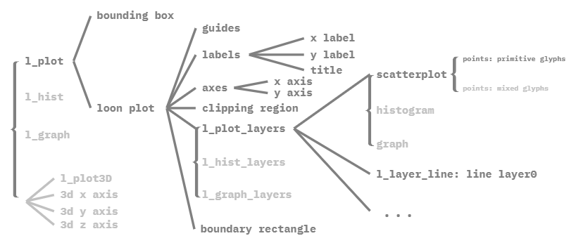

Motivation
The loon package is mainly designed for interactive data exploration. After exploring the events of interest, we need a tool to turn the interactive charts static either for storage or publication. A simple screen-shot is an obvious choice, however it has several drawbacks. First, the plot’s clipping region is very arbitrary. It would be hard to unify all images’ margins. Second, fine details cannot be added programmatically afterwards.
The grid graphics, created by Paul Murrell, is one of the most fundamental graphics in R. It provides a low-level, general purpose graphics system for producing a wide variety of plots. Many well-known graphical systems, e.g. lattice and ggplot2, use grid to draw plots.
With loonGrob, one can turn an interactive loon widget to a grid object either for further use or adding some fine details that analyst cannot accomplish directly in loon.
loon –> grid
Begin with a classic data set in R – mtcars which contains 32 automobiles and 11 (numeric) variables.
Here, p is a loon widget. The aesthetics attributes can be accessed either by function l_cget() or a simple [, as in
# x coordinates
p['x']## [1] 21.0 21.0 22.8 21.4 18.7 18.1 14.3 24.4 22.8 19.2 17.8 16.4 17.3 15.2 10.4
## [16] 10.4 14.7 32.4 30.4 33.9 21.5 15.5 15.2 13.3 19.2 27.3 26.0 30.4 15.8 19.7
## [31] 15.0 21.4
# point size
p['size']## [1] 8 8 8 8 8 8 8 8 8 8 8 8 8 8 8 8 8 8 8 8 8 8 8 8 8 8 8 8 8 8 8 8These returned values always reflect the current states of p. For example, suppose the size of points is modified to 6 by direct manipulations on the plot, call p['size'], a length 32 vector of 6 is returned. With this handy “querying tool”, all essential elements of a loon widget can be accessed to construct a selfsame grid graphics, as in
## [1] "gTree" "grob" "gDesc"Here, g0 is a gTree object, a data structure in grid who has other grobs (a description of a graphical item. These basic classes provide default behavior for validating, drawing, and modifying graphical objects in grid graphics) as children. To draw this gTree, one can call function grid.draw().
library(grid)
grid.newpage()
grid.draw(g0)
Then, a nearly identical plot is displayed. Alternatively, a simple way to create a static plot is to call the generic R function plot(), as in
# `p` is a loon widget
plot(p)Object g0 is a rich data structure containing all elements of this plot. Function grid.ls produces the g0 data structure.
grid.ls(g0)## GRID.gTree.1
## l_plot
## bounding box
## loon plot
## guides
## guides background
## guidelines: xaxis (major), x = 15
## guidelines: xaxis (major), x = 25
## guidelines: xaxis (major), x = 35
## guidelines: xaxis (minor), x = 10
## guidelines: xaxis (minor), x = 20
## guidelines: xaxis (minor), x = 30
## guidelines: yaxis (major), y = 100
## guidelines: yaxis (major), y = 200
## guidelines: yaxis (major), y = 300
## guidelines: yaxis (minor), y = 50
## guidelines: yaxis (minor), y = 150
## guidelines: yaxis (minor), y = 250
## guidelines: yaxis (minor), y = 350
## labels
## x label
## y label
## title: textGrob arguments
## axes
## x axis
## major
## ticks
## labels
## y axis
## major
## ticks
## labels
## clipping region
## l_plot_layers
## scatterplot
## points: primitive glyphs
## boundary rectangleThe following Figure can better reveal the hierarchy structure.

In this Figure, the labels represent the loonGrob names and the solid line represents the hierarchy. All labels in the curly braces are other potential options (depending on the loon plot) under this level. So far the apex string is l_plot, the string beneath the loon plot is l_plot_layers and scatterplot comes under l_plot_layers. Suppose the p is a loon histogram, then the apex string would be l_hist and the label name beneath the loon plot would be l_hist_layers, etc.
With these labels, one can retrieve, edit or even replace any fine details of this plot. For example, one can retrieve the “xlabel” and “ylabel” grobs as in
# retrieve xlabel grob
xlabelGrob <- getGrob(g0, "x label")
xlabelGrob## text[x label]
# retrieve ylabel grob
ylabelGrob <- getGrob(g0, "y label")
ylabelGrob## text[y label]Then, give more meaningful “label” names
g0 <- setGrob(
gTree = g0,
gPath = "x label",
newGrob = editGrob(xlabelGrob,
label = "Miles/(US) gallon")
)
g0 <- setGrob(
gTree = g0,
gPath = "y label",
newGrob = editGrob(ylabelGrob,
label = "Gross horsepower")
)
grid.newpage()
grid.draw(g0)
Here “xlabel” and “ylabel” are altered to “Miles/(US) gallon” and “Gross horsepower” respectively.
Graphical system loon uses 12 digit hexadecimal color resulting the missing transparency. Fortunately, transparency is accommodated in grid graphics so that one can set the alpha values after the transformation, as in
loonPointsGrob <- getGrob(g0, "points: primitive glyphs")
# alter `gpar` "Grid graphical PARameters"
newLoonPointsGrob <- editGrob(
loonPointsGrob,
gp = gpar(
fill = as_hex6color(p['color']),
col = l_getOption("foreground"),
fontsize = 20, # give a larger point size,
alpha = 0.3 # turn color transparent
)
)
# update loon points grob
g0 <- setGrob(
gTree = g0,
gPath = "points: primitive glyphs",
newGrob = newLoonPointsGrob
)
grid.newpage()
grid.draw(g0)
After modification, the points are transparent and the size gets larger.
What if…
Axes, Labels and Guides are Invisible?
All labels shown in the Figure “hierarchy” are within a certain condition that they are invisible. What if they are hidden? Here, we turn the “xlabel” and “ylabel” off and construct a new loonGrob g1
p['showLabels'] <- FALSE
g1 <- loonGrob(p)Suppose we still want to retrieve the “xlabel” and “ylabel”
xlabelGrob <- getGrob(g1, "x label")
xlabelGrob## NULL
ylabelGrob <- getGrob(g1, "y label")
ylabelGrob## NULLRather than two textGrobs we have seen before, NULL is returned. In other words, there are no “x label” and “y label” names under g0. It is because, once the axes, labels or guide lines are invisible in loon, when it is transformed to grid graphics, the hidden elements would be stored into grob() (does not produce any displays) and the name would be pasted with a suffix : … arguments where … represents the grob function used to display this object. For example, in our case, the suffix is “: textGrob arguments”.
xlabelGrob <- getGrob(g1, "x label: textGrob arguments")
xlabelGrob## grob[x label: textGrob arguments]
ylabelGrob <- getGrob(g1, "y label: textGrob arguments")
ylabelGrob## grob[y label: textGrob arguments]These grobs contain the relevant arguments to drawing them. The main benefit is that for some elements that they were not drawn in the loon plot, users are still able to retrieve their arguments in grid for further analysis.
xlabelGrob$label## [1] "mpg"
ylabelGrob$label## [1] "hp"Points
-
are Invisible?
Unfortunately, if points are invisible, their coordinates and aesthetics attributes would be missing in the
loonGrob. Technically speaking, it is possible to include these invisible points inside theloonGrob, however, what stops us doing so is that the data structure may be changed – apointsGrobwould be replaced to agTreewith childrenpointsGrob. EachpointsGrobonly draws an individual point to maintain the display order. We are not sure whether it is worth the efforts. -
are Non-primitive Glyphs?
loonprovides non-primitive glyphs, e.g. text glyph, image glyph, polygon glyph and etc. Once a non-primitive glyph is drawn, thegroblabel beneath scatterplot would be points: mixed glyph.# add text glyph carNames <- l_glyph_add_text(p, text = rownames(mtcars)) p['glyph'] <- carNames # loonGrob g2 <- loonGrob(p) getGrob(g2, "points: mixed glyphs")## gTree[points: mixed glyphs]It returns a
gTreeobject and each child is atextGrob.
Beyond Static Graphics
A loonGrob is a static version of a loon plot. Not only creating a plot, it is a rich data structure. All elements in a loonGrob have meaningful names and users are able to fully access and edit it. Due to these nice features, package loon.shiny is dependent on it. This is a package to render a loon plot into a shiny app. The interactivity is realized by manipulating the static loonGrob. More details are introduced here.